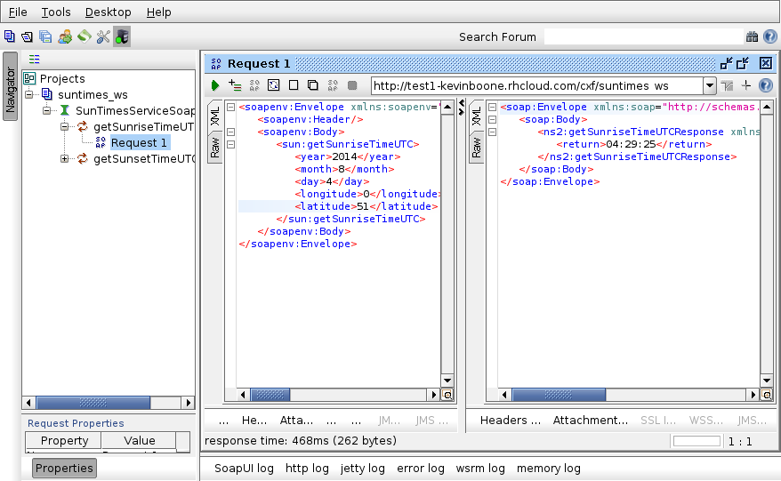

cxf-codegen-plugin to generate a WSDL file from a Java interfaceSunTimesSEI, where 'SEI' stands for Service Endpoint Interface.
package net.kevinboone.apacheintegration.suntimes_ws;
import javax.jws.*;
@WebService(name="SunTimesWS")
public interface SunTimesSEI
{
public String getSunsetTimeUTC (@WebParam(name="year") int year,
@WebParam(name="month") int month,
@WebParam(name="day") int day,
@WebParam(name="longitude") double longitude,
@WebParam(name="latitude") double latitude)
throws SunTimesException;
public String getSunriseTimeUTC (@WebParam(name="year") int year,
@WebParam(name="month") int month,
@WebParam(name="day") int day,
@WebParam(name="longitude") double longitude,
@WebParam(name="latitude") double latitude)
throws SunTimesException;
}
Apart from the annotations, this is a perfectly ordinary Java interface.
The WebService annotation marks this as a Web Service with
the specified name. The @WebParam annotations provide names
for the various arguments to the methods, as they will appear in
the WSDL file. These annotations are important in making the WSDL
file (more) readable; by default the WSDL generator tooling will simply
name these arguments arg0, arg1. The
rationale for this odd-seeming implementation detail is described
in the
CXF FAQ.
Note that I have rather lazily organized the Service implementation to
return the time in a String, rather than some Java data type. For
demonstration purposes, it's slightly less fiddly to do this, and makes
the XML a whole lot more comprehensible, than using an object type.
@javax.jws.WebService(endpointInterface
="net.kevinboone.apacheintegration.suntimes_ws.SunTimesSEI")
public class SunTimes implements SunTimesSEI
{
public String getSunsetTimeUTC (int year, int month, int day,
double longitude, double latitude)
throws SunTimesException
{
// Calulation logic here...
}
public String getSunriseTimeUTC (int year, int month, int day,
double longitude, double latitude)
throws SunTimesException
{
// Calulation logic here...
}
}
Note that we must, again, annotate the class as a @WebService,
but in the implementation class the annotation specifies the location
of the corresponding Service Endpoint Interface. Other than that, in
this simple example, this is a perfectly ordinary Java class that implements
the methods in an interface.
In fact, the CXF tooling can work directly on a class, so strictly speaking
it's not necessary to use an interface at all. However, for all but the
simplest services, that's unlikely to be a scalable approach to development.
java2ws tool to generate the WSDL, but as we're using
Maven, it's easier to use the Maven cxf-java2ws-plugin
plugin to integrate this into the build process. If you look in
the pom.xml file, you'll see the specification
for the plugin, which is essentially boilerplate code, apart from
the element that indicates the interface that forms the SEI:
//...
cxf-java2ws-plugin
//...
net.kevinboone.apacheintegration.suntimes_ws.SunTimesSEI
java2ws
We can generate the WSDL using
$ mvn generate-sourcesbut there's no particular need to, as the usual build processes will do it implicitly.
@notebox(We need to be a bit careful about the xmlns:jaxws namespace here -- it must specifically be blueprint/jaxws. If you've seen examples of CXF endpoints configured using Spring, you'll probably be more used to http://cxf.apache.org/jaxws. Getting this wrong will not stop the bundle from building, but will lead to a slew of incomprehensible error messages at deployment time.
The implementor attribute specifies the class that implements
the SEI (and thus provides the actual functionality). address
is the URL of the service as it is presented to CXF. In Fuse/Fabric8
this will not be the URL requested by clients, as this is
configurable. By default, Fuse/Fabric8 puts /cxf in front of
this URL, to separate CXF requests from requests on the Web console and
other administrative interfaces.
$ mvn installwhich will also put the compiled OSGi bundle into the local Maven repository, where it can be retried by Fuse/Fabric/Karaf.
JBossFuse:karaf@root> osgi:install -s mvn:net.kevinboone.apacheintegration/suntimes_ws/0.0.0.1A similar procedue should work on Karaf or ServiceMix, except that you'll need to add CXF support first, using a command such as
features:install
cxf.
An alternative procedure is to copy the JAR file containing the bundle
(from the target directory) to some convenient location,
and install it using, for example, osgi:install file://somefile.
osgi:install. Instead,
software must be placed in a repository (the fabric's own repository will
do), and then added to a profile. The profile can then be added to
a container, which will install the application.
The most convenient way to do this is to use the Fabric8 Maven plugin,
which requires a simple addition to the pom.xml. The configuration
specifies the URL of the fabric server to which to deploy, and then the
deployment process is as simple as
$ mvn fabric8:deployThis process does not install the software in an actual container; instead it creates a profile whose name, in this case, will be
Net.Kevinboone.Apacheintegration/suntimes_ws (this name is
derived from the Maven coordinates). This profile is ready to add
to a container -- you'll need to add Feature/CXF profile
as well, if you're not deploying on the root container.
For a more detailed explanation of the Fabric8 Maven plug-in, see my article
Using the Fabric8 Maven plugin to deploy a Camel route to a fabric.
?wsdl appended which, in this case,
will be a URL of the formhttp://localhost:8181/cxf/suntimes_ws?wsdl.
SoapUI is a general-purpose Web Services testing tool. Binaries are
available for many platforms from the
SoapUI Web site. There
isn't space here to describe how to install SoapUI, as it differs
from one platform to another.
Here is one way to test the Web Service of this article using
SoapUI.
1. Within the SoapUI graphical user interface, create a new SOAP project
(File : New SOAP Project).
For the project name, enter some identifier (e.g., suntimes_ws).
For the initial WSDL, enter the WSDL URL on the running server, e.g.
http://localhost:8181/cxf/suntimes_ws?wsdl.
Ensure "Create Requests" is checked. Click OK -- this will generate some
sample requests appropriate to the Service.
2. Under 'Projects' in the left-hand pane, you should see a tree that can
be expanded to show the two functions exposed by the suntimes_ws
Service. Expand the function getSunriseTimeUTC to show
the automatically-generated sample request Request 1.
Right-click Request 1 and select 'Show request editor'. This
will bring up a SOAP envelope based on the WSDL file, with ? placeholders
where you can enter the input values.
3. Enter some value for the year, month, day, latitude, and longitude elements
in place of the ? placeholders.
4. Click the green triangle in the top left of the editor window to
run the operation. This should display the SOAP envelope returned
by the service:

All being well, the returned value should be the sunrise time appropriate to the date and location (expressed in UTC time).
@WebService and
(perhaps) @WebMethod.
2. Write the Java classes that implement the interfaces; annotate with
@WebService and indicate the corresponding interface.
3. Add the code generator plugin to the Maven pom.xml if
you need an explicit WSDL file at build time.
4. Add one or more jaxws:endpoint elements to the Blueprint
XML file.
5. Build and test.